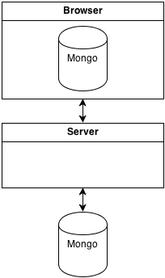

Meteor Framework
What, Why, Wat
High-level Architecture

It's Real-time
- Collection Synchronization
- Reactive data sources
- Reactive templates
The Good
- Looks cool
- Might be good for certain types of apps
- Fibers on the server (no callbacks, yay!)
The Bad
- Always connected
- Collection sync
- Reactivity
- Minimongo
- Client
- Server
- Performance
- Ecosystem
Always Connected
- Meteor applications are not crawlable
- No server-side templates
- Headless webkit on the server to render pages (duh)
Collection synchronization
- Paging not possible without ugly hacks
- Limited API
- No rate limiting
- Wasted bandwidth (mobile anyone?)
Reactivity
- Feels bolted-on in both client and server
- Mongo is not reactive - polling all the way
Minimongo
- No indexes
- No aggregations
- No map-reduce
- Slooooow
Client
- Flat variables namespace (Meteor.session)
- Flat templates namespace (Meteor.templates)
- No built-in routing
- No two-way data-binding
- Handlebars are too logic-less
Client: Continued
- Meteor.autorun() handle leaking
- Meteor-router double view triggering
- Lots of special cases in templates
Server
- Flat methods namespace (Meteor.methods)
- Ain't fast (minimongo + reactivity)
- No command-like API (no scripts!)
- No server-side templates
Performance
- 200 req/s on aws large for REST API
- 3s Chrome DOM lockup with 8k items in collection on Core i7
- So much faster without minimongo
Ecosystem
- Own package manager
- Didn't play nice with npm
- Not too many different extensions
Real experience
Talkalytics
- Customers
- Orders
- Real-time analytics
Problems
- Horrible client-side and server-side performance
- Amount of data during initial sync
- Browser DOM lockups
- Mobile clients were dying
Changes
- Got rid of collection synchronization
- REST-like API to work with data
- Client was dumbed down, minimongo not used
- Used MongoDB directly
- Reactivity is reduced to bare minimum
Conclusions
- Meteor is not mature
- Meteor is slow
- Meteor is not for mobile
- Meteor is not search engine friendly
- Meteor does not work if you have data